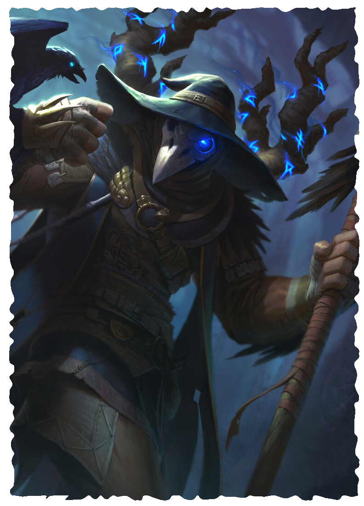

WARLOCK
Warlocks, called oath-breakers by some, are counted by wizards as the most despicable of the users of magic, for they come by their power by underhanded means. Rather than study ancient texts or pledge their lives to a god or gods, warlocks steal their magic from anyone and everyone they can, be they dread agents of the underworld or from the minds of rival casters. With the talents and techniques to do so, warlocks take whatever power they want from whoever they wish.
Most warlocks come from magical backgrounds, having at least dabbled in magic. They include has-been or failed magicians, defrocked priests, or even rogues who managed to learn a few tricks. Whatever their origins, they pursue magical knowledge in fell places, making deals with devils, faeries, or any other being who might bestow on them the knowledge they crave. Not content with the gains they make through their bargains, warlocks eventually learn techniques to take spells from others directly. All they need to do is witness the spell being cast and they can pluck it from the air, causing the original spell to fizzle out and enabling them with the ability to cast it themselves.
LEVEL 3 WARLOCK
Attributes Increase two by 1
Characteristics Health +2, Power +1
Languages and Professions Add one Criminal Profession.
Magic You discover a tradition or learn one spell.
Steal Spell When a creature within medium range casts a spell, you can use a triggered action to attempt to steal it. Make an Intellect attack roll against the triggering creature’s Intellect. On a success, the cast spell has no effect. If your Power is high enough to cast the spell, you gain one casting of that spell. You retain this casting until you expend it to cast the spell or until you complete a rest, at which point the casting fades from your mind. You can use this talent a number of times equal to your Power. You regain expended uses when you complete a rest.
Vanish When you take damage, you can use a triggered action to become invisible for 1 round or until you attack. If you have a casting of a spell from your Steal Spell talent, you can expend that casting to remain invisible for 1 minute.
LEVEL 6 WARLOCK
Characteristics Health +2
Magic You discover a tradition or learn one spell.
Elude Divination You cannot be percieved by Divination spells.
LEVEL 9 MASTER WARLOCK
Characteristics Health +2, Power +1
Magic You discover a tradition or learn one spell.
Spell Thief Mastery When you use your Steal Spell you always steal the triggering spell and can cast it, regardless of your Power.
Vanishing Escape When you use your Vanish talent, you can also teleport to an open space within short range.